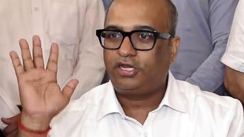
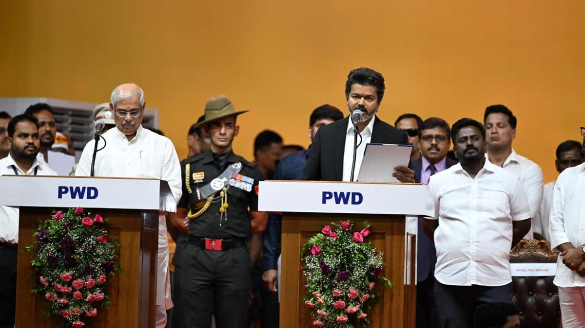
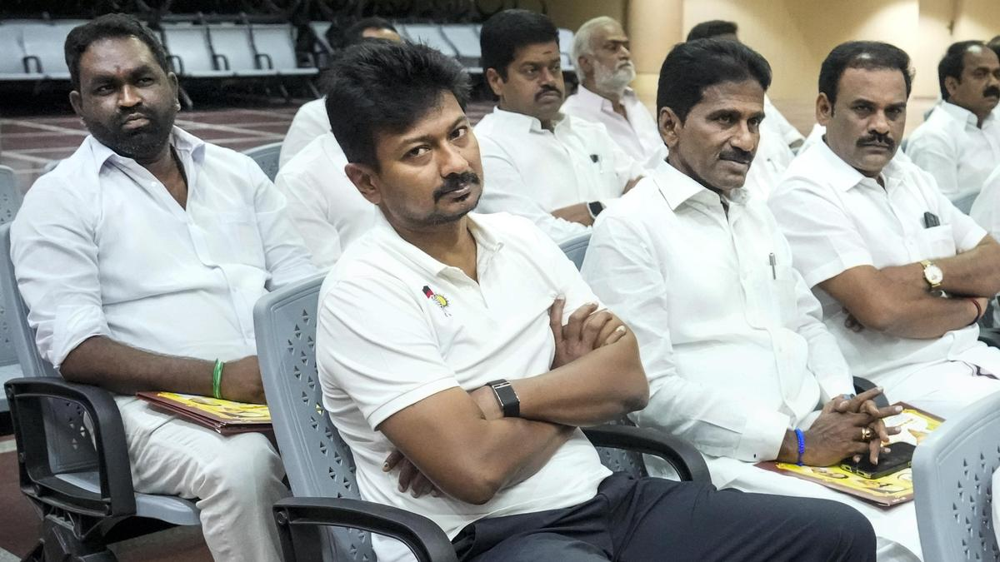
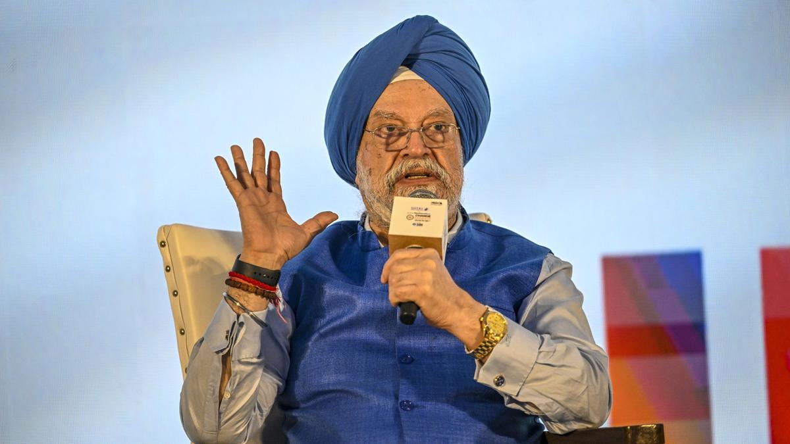
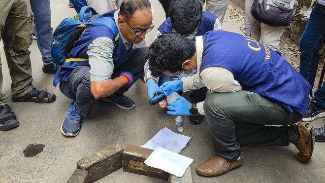
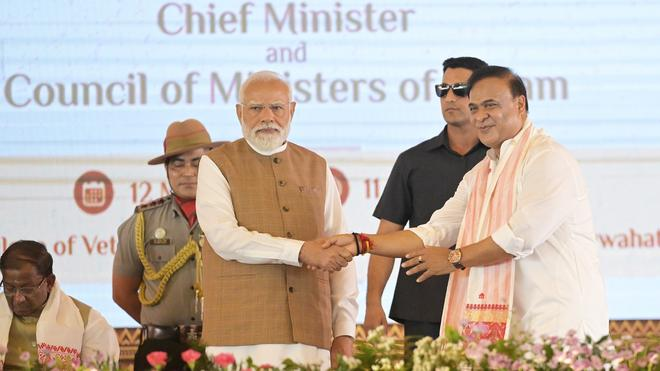
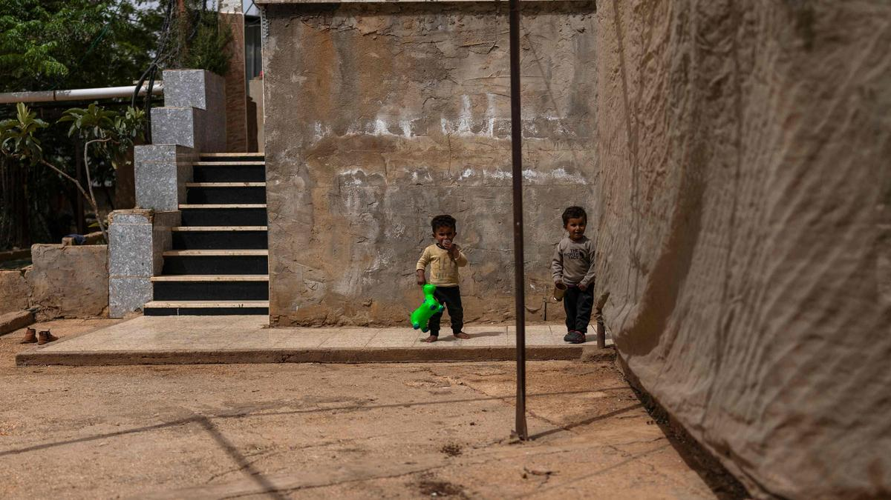

**Head News**
NEET-UG 2026 cancelled LIVE: Process to hold re-exam to begin in 7-10 days: NTA DG Abhishek Singh
|
The cancellation of the NEET-UG 2026 examination, following an alleged question paper leak, has led to widespread political and student outrage across StatesThe National Testing Agency (NTA) on Tuesday (May 12, 2026) cancelled the NEET-UG 2026 exam held on May 3 amid allegations of paper leak, with the government asking the CBI to carry out a comprehensive inquiry into the “irregularities”. This decision comes as a Rajasthan Special Operations Group is investigating into the allegations of the exam paper leak.The cancellation of the NEET-UG 2026 examination, following an alleged question paper leak, has led to widespread political and student outrage across StatesThe National Testing Agency (NTA) on Tuesday (May 12, 2026) cancelled the NEET-UG 2026 exam held on May 3 amid allegations of paper leak, with the government asking the CBI to carry out a comprehensive inquiry into the “irregularities”. This decision comes as a Rajasthan Special Operations Group is investigating into the allegations of the exam paper leak |
 |
2026 cancelled: What happens next? Here’s what students need to know
“On the basis of the inputs subsequently examined by NTA in coordination with the central agencies, and the investigative findings shared by the law enforcement agencies and in order to ensure that there is transparency in the system, the National Testing Agency, with the approval of the Government of India, has decided to cancel the NEET (UG) 2026 examination conducted on 3 May 2026, and to re-conduct the examination on dates that will be notified separately,” the NTA said in a press release. The examinationfor students seeking admission to undergraduate courses in medical colleges will now be held again on dates to be notified separately.“On the basis of the inputs subsequently examined by NTA in coordination with the central agencies, and the investigative findings shared by the law enforcement agencies and in order to ensure that there is transparency in the system, the National Testing Agency, with the approval of the Government of India, has decided to cancel the NEET (UG) 2026 examination conducted on 3 May 2026, and to re-conduct the examination on dates that will be notified separately,” the NTA said in a press release. The examinationfor students seeking admission to undergraduate courses in medical colleges will now be held again on dates to be notified separately.
|
 |
Joseph Vijay sworn-in as Tamil Nadu Chief MinisterAs he commenced uttering “C. Joseph Vijay ennum naan…”, the crowd erupted in celebration, with whistle sounds filling the stadium with excitement and a sense of political arrival Tamilaga Vettri Kazhagam (TVK) president C. Joseph Vijay was sworn-in as Tamil Nadu Chief Minister in Jawaharlal Nehru Indoor Stadium in Chennai on Sunday (May 10, 2026) morning — a moment long awaited by several thousand fans and supporters. As Governor Rajendra Vishwanath Arlekar administered the oath of office and secrecy to the new Chief Minister, emotionally-charged supporters cheered their ‘Thalapathy’ assuming Tamil Nadu’s top political office. Several fans turned visibly emotional, with some shedding tears of joy as they witnessed the actor-turned-politician becoming the Chief Minister of the State. Congress leader Rahul Gandhi was present on the stage.May 10, 2026 | Photo Credit: B. Jothi Ramalingam Tamilaga Vettri Kazhagam (TVK) president C. Joseph Vijay was sworn-in as Tamil Nadu Chief Minister in Jawaharlal Nehru Indoor Stadium in Chennai on Sunday (May 10, 2026) morning — a moment long awaited by several thousand fans and supporters. As Governor Rajendra Vishwanath Arlekar administered the oath of office and secrecy to the new Chief Minister, emotionally-charged supporters cheered their ‘Thalapathy’ assuming Tamil Nadu’s top political office. Several fans turned visibly emotional, |
In Tamil Nadu Assembly, it’s Vijay versus UdhayanidhiBelonging to a new generation of politicians, Mr. Udhayanidhi Stalin always wears jeans and a white T-shirt with a logo of the DMK’s youth wing, in departure from the traditional attire associated with Tamil Nadu politics. In that sense, he mirrors Tamil Nadu Chief Minister Vijay, who appeared in a blazer and trousers for the swearing-in ceremony.The Assembly is set to witness a political face-off between Chief Minister C. Joseph Vijay and Mr. Udhayanidhi Stalin — both of whom have film backgrounds. Belonging to a new generation of politicians, Mr. Udhayanidhi Stalin had departed from the traditional attire associated with Tamil Nadu politics — the white dhoti with party-coloured borders paired with a white shirt, always wears jeans and a white T-shirt with a logo of the DMK’s youth wing. In that sense, he mirrors Mr. Vijay, who appeared in a blazer and trousers for the swearing-in ceremony.Mr. Udhayanidhi Stalin is stepping into the shoes of his father, M.K. Stalin, who, after his defeat in the Kolathur constituency, will not be present in the Assembly. His role is similar to that played by Mr. M.K. Stalin between 2016 and 2021, when he served as Leader of the Opposition as former DMK president M. Karunanidhi was unable to attend the House because of age-related health issues and the lack of adequate wheelchair access arrangements. |
 |
**India**
|
 |
Petroleum Minister does not rule out fuel price hike amidst concerns about mounting OMCs’ lossesSpeaking at the CII Annual Business Summit 2026, Petroleum Minister Hardeep Puri said India has 60 days of crude oil and LNG stock, and 45 days of rolling stock of LPGThough reassuring about the adequacy of retail fuels, Union Petroleum Minister Hardeep Singh Puri, placing his concerns about oil-marketing companies’ losses from the sale of petrol, diesel and liquified petroleum gas (LPG) as they seek to hold prices firm, indicated that should the crisis prolong, the government may have to consider passing on the pressure to domestic consumers as well about oil-marketing companies’ losses from the sale of petrol, diesel and liquified petroleum gas (LPG) as they seek to hold prices firm, indicated that should the crisis prolong, the government may have to consider passing on the pressure to domestic consumers as well(LPG) as they seek to hold prices firm, indicated that should the crisis prolong, the government may have to consider passing on the pressure to domestic consumers as well |
3 held from Uttar Pradesh, Bihar in killing of Suvendu's aideThree suspects in the murder of West Bengal Chief Minister Suvendu Adhikari’s personal assistant, Chandranath Rath, have been arrested by the State police from Uttar Pradesh and Bihar. A team of the Special Investigation Team (SIT) had already headed to the two States for further investigation. The arrested have been sent to a 13-day police custody. “The three accused were brought to West Bengal and produced before the Barasat court in North 24 Paraganas district on Monday. They were remanded to 13-day police custody,” a senior officer said. The Barasat court asked the police to produce them again on May 24, he said.Three suspects in the murder of West Bengal Chief Minister Suvendu Adhikari’s personal assistant, Chandranath Rath, have been arrested by the State police from Uttar Pradesh and Bihar. A team of the Special Investigation Team (SIT) had already headed to the two States for further investigation. The arrested have been sent to a 13-day police custody. “The three accused were brought to West Bengal and produced before the Barasat court in North 24 Paraganas district on Monday. They were remanded to 13-day police custody,” a senior officer said. The Barasat court asked the police to produce them again on May 24, he said. |
 |
|
 |
Assam swearing-in highlights: Himanta Biswa Sarma takes oath as Assam CM; Four MLAs sworn in as MinistersHimanta Biswa Sarma was sworn in as the Chief Minister of Assam for the second consecutive term on Tuesday (May 2, 2026). Governor Lakshman Prasad Acharya administered the oath of office to Mr. Sarma at a grand ceremony held at the Veterinary Ground in the Khanapara area in Guwahati. Also Read | Assam CM Himanta Biswa Sarma’s political timeline Four MLAs - the BJP’s Rameswar Teli and Ajanta Neog, AGP’s Atul Bora, Charan Boro of BPF- also took oath as Ministers. Prime Minister Narendra Modi, Union Ministers Amit Shah, Rajnath Singh, Nitin Gadkari, Sarbananda Sonowal, Pabitra Margherita, Chief Ministers and deputy chief ministers of BJP-ruled States, and BJP president Nitin Nabin were present at the swearing-in ceremony. Also Read | BJP-led NDA scores hat-trick in Assam The swearing-in ceremony marks the formation of the third successive NDA government in the State.Also Read | Assam CM Himanta Biswa Sarma’s political timeline Four MLAs - the BJP’s Rameswar Teli and Ajanta Neog, AGP’s Atul Bora, Charan Boro of BPF- also took oath as Ministers. Prime Minister Narendra Modi, Union Ministers Amit Shah, Rajnath Singh, Nitin Gadkari, Sarbananda Sonowal, Pabitra Margherita, Chief Ministers and deputy chief ministers of BJP-ruled States, and BJP president Nitin Nabin were present at the swearing-in ceremony. Also Read | BJP-led NDA scores hat-trick in Assam The swearing-in ceremony marks the formation of the third successive NDA government in the Stat |
World
|
 |
UN condemns child death toll from Israel's West Bank operations“Israeli forces were responsible for a full 93% of the children killed in the West Bank, including East Jerusalem, since January 2025” The United Nations condemned on Tuesday (May 12, 2026) the toll from swelling Israeli military operations and settler attacks in the occupied West Bank on children, with 70 Palestinian children killed since early 2025. The United Nations condemned on Tuesday (May 12, 2026) the toll from swelling Israeli military operations and settler attacks in the occupied West Bank on children, with 70 Palestinian children killed since early 2025. The United Nations condemned on Tuesday (May 12, 2026) the toll from swelling Israeli military operations and settler attacks in the occupied West Bank on children, with 70 Palestinian children killed since early 2025. The United Nations condemned on Tuesday (May 12, 2026) the toll from swelling Israeli military operations and settler attacks in the occupied West Bank on children, with 70 Palestinian children killed since early 2025. |
Kuwait accuses Iran of sending armed Revolutionary Guard team to attack an island in nationKuwait accused Iran on Tuesday (May 12, 2026) of sending an armed paramilitary Revolutionary Guard team to attack an island in the West Asian nation home to a China-funded port project, just before U.S. President Donald Trump travels to Beijing for a meeting with Chinese President Xi Jinping.Kuwait accused Iran on Tuesday (May 12, 2026) of sending an armed paramilitary Revolutionary Guard team to attack an island in the West Asian nation home to a China-funded port project, just before U.S. President Donald Trump travels to Beijing for a meeting with Chinese President Xi Jinping. Iran didn't immediately acknowledge the allegation by Kuwait, which came under repeated attack by Iran in the war and even during the shaky ceasefire still holding in the region. However, the allegation and ongoing attacks throughout the region have threatened to tip the region back into open warfare. |
Sport
IPL 2026 | Rabada and Holder rip through SRH as GT goes topThe pacers take three wickets each to help the home team defend 168 in style, bowling out the visitor for 86 in 14.5 overs; Sai Sudharsan and Washington’s gutsy half-centuries prove invaluableThe Gujarat Titans’ irrepressible new-ball attack outclassed Sunrisers Hyderabad’s marauding top order in a much-anticipated IPL 2026 clash as the home team stormed to a convincing 82-run win at the Narendra Modi Stadium in Ahmedabad on Tuesday (May 12, 2026).Photo Credit: Reuters The Gujarat Titans’ irrepressible new-ball attack outclassed Sunrisers Hyderabad’s marauding top order in a much-anticipated IPL 2026 clash as the home team stormed to a convincing 82-run win at the Narendra Modi Stadium in Ahmedabad on Tuesday (May 12, 2026). Titans pacers Kagiso Rabada (three for 28) and Mohammed Siraj (one for 11) ripped through SRH’s batting spine, reducing the away side to 32 for four in the PowerPlay in its ill-fated 169-run chase on a sluggish black-soil surface. |
Satwik-Chirag win in Thailand OpenThe Indian pair will face Malaysia's Bryan Jeremy Goonting and Muhammad Haikal nextd Chirag Shetty win the Thailand Open Super 500 tournament. File photo: X/Gurinder Osan via PTI Top seeds Satwiksairaj Rankireddy and Chirag Shetty survived a stiff challenge before defeating Indonesia's Muh Putra Erwiansyah and Bagas Maulana in a thrilling three-game opener of the men's doubles competition at the Thailand Open Super 500 tournament here on Tuesday (May 12, 2026). The world No. 4 Indian pair registered a 19-21, 23-21, 21-10 win over Muh and Bagas in 64 minutes. The Indian pair found themselves trailing 11-16 in the second game before reeling off seven straight points to turn the tide. Muh and Bagas fought back to make it 18-18, but Satwik and Chirag held their nerve to level the contest. d Chirag Shetty win the Thailand Open Super 500 tournament. File photo: X/Gurinder Osan via PTI Top seeds Satwiksairaj Rankireddy and Chirag Shetty survived a stiff challenge before defeating Indonesia's Muh Putra Erwiansyah and Bagas Maulana in a thrilling three-game opener of the men's doubles competition at the Thailand Open Super 500 tournament here on Tuesday (May 12, 2026). The world No. 4 Indian pair registered a 19-21, 23-21, 21-10 win over Muh and Bagas in 64 minutes. The Indian pair found themselves trailing 11-16 in the second game before reeling off seven straight points to turn the tide. Muh and Bagas fought back to make it 18-18, but Satwik and Chirag held their nerve to level the contest. |